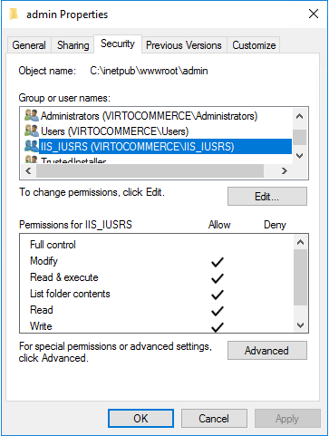
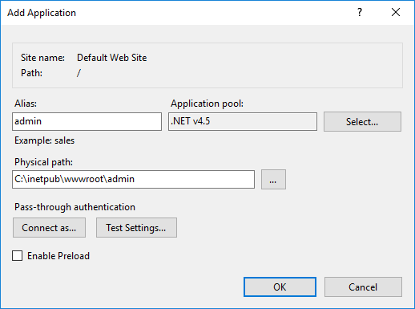
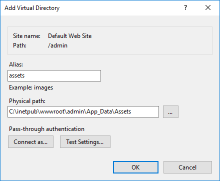
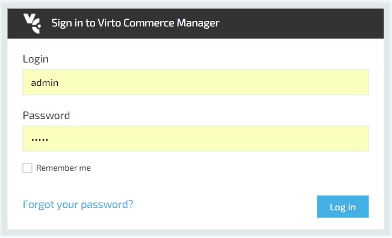
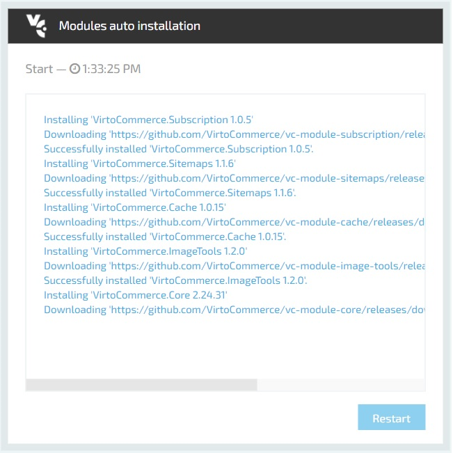
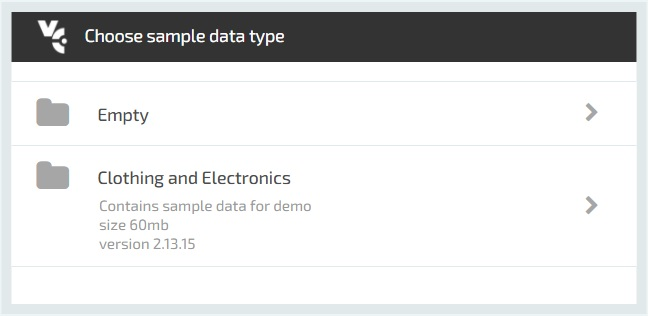
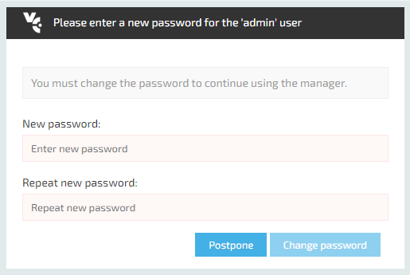
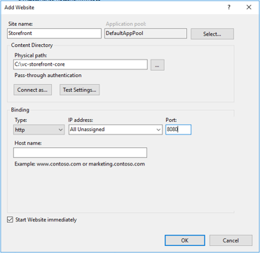
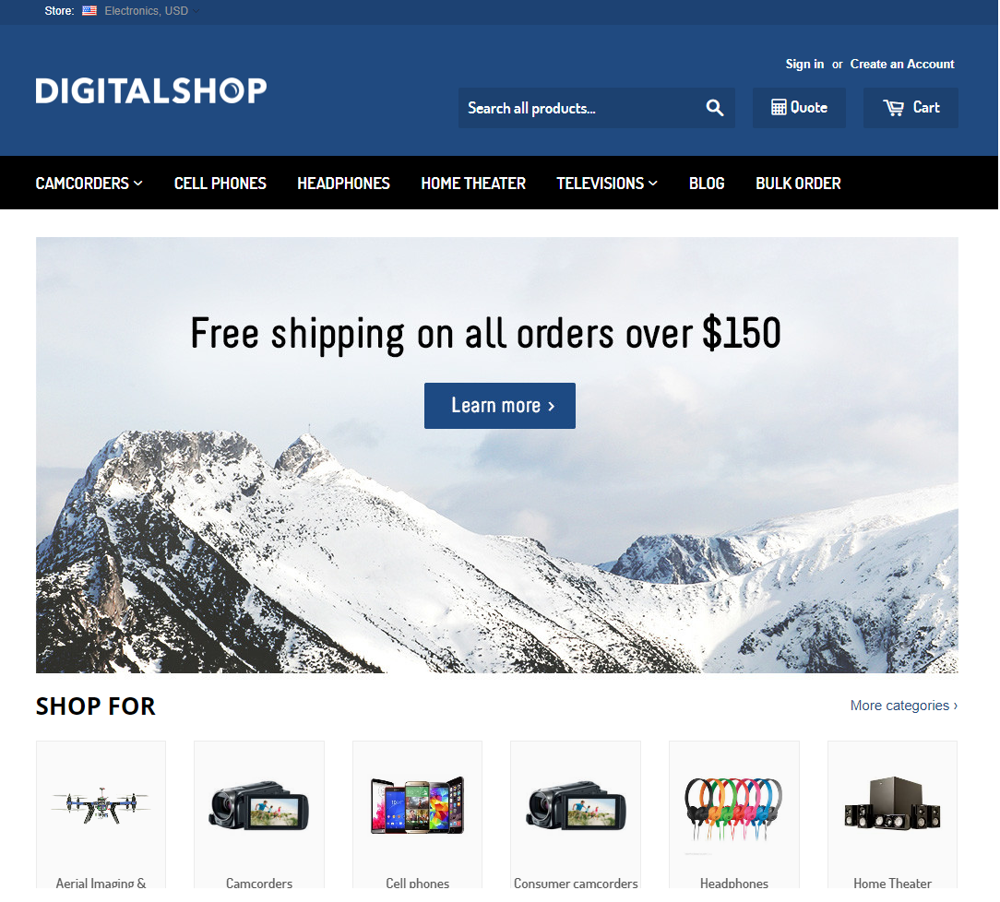

Lesson 1 - How to deploy and configure Virto Commerce
Summary
Use this guide to deploy and configure precompiled Virto Commerce Platform (backend) and Virto Commerce Storefront (frontend).
Video
- Part 1. How to deploy and configure Virto Commerce Platform
- Part 2. How to deploy and configure Virto Commerce Storefront
Prerequisites
- Windows Server 2008 R2 SP1 or later
- Enable Internet Information Services. You may use PowerShell command:
Install-WindowsFeature -name Web-Server -IncludeAllSubFeature
- Microsoft .NET Framework 4.6.1
- Microsoft SQL Server 2008 or later with SQL Management Studio(free MS SQL Express would be enough)
- Visual C++ Redistributable Packages for Visual Studio
- Prerequisites for .NET Core on Windows
- .NET Core Runtime
Initial configuration of VirtoCommerce Platform (backend)
Navigate to the Releases section of Virto Commerce Platform in GitHub.
You will find and download VirtoCommerce.Platform.2.x.x.zip file.
Unpack follow zip to the web server in IIS application root directory C:\inetpub\wwwroot\admin. If there is no admin directory inside wwwroot, create it manually or with PowerShell commands:
$folder="C:\inetpub\wwwroot\admin"
New-Item -ItemType directory -Path $folder -Force
Setup of Virto Commerce Platform
Configure connection strings
- Open the C:\inetpub\wwwroot\admin\Web.config file in a text editor.
- In the connectionStrings section find the add node:
VirtoCommerce: parameters for SQL server database. Change (local) to IP address of your SQL Server. For locally running instance SQL Express set Data Source=.\SQLEXPRESS.
<add name="VirtoCommerce" connectionString="Data Source=(local);Initial Catalog=VirtoCommerce2;Persist Security Info=True;User ID=virto;Password=virto;MultipleActiveResultSets=True;Connect Timeout=420" providerName="System.Data.SqlClient" />
Create virto user in SQL Server Manager
- Open SQL Server Manager and connect to the local sql server on Database Engine. Add to Security/Logins new login name virto with password virto, give him in Server Roles dbcreator and public roles.
Configure permissions for admin folder of VirtoCommerce Platform
Open properties for C:\inetpub\wwwroot\admin folder and give permission Modify to IIS_IUSRS user group.

The same can be done with PowerShell commands:
$acl = Get-Acl $folder
$acl.SetAccessRuleProtection($True, $True)
Set-Acl -Path $folder -AclObject $acl
$permission = "BUILTIN\IIS_IUSRS","Modify, Synchronize", "ContainerInherit, ObjectInherit", "None", "Allow"
$accessRule = New-Object System.Security.AccessControl.FileSystemAccessRule $permission
$acl.SetAccessRule($accessRule)
$acl | Set-Acl $folder
Configure IIS
- Open the IIS Manager and create a new application named admin inside an existing Default Web Site.
- In the Physical path field enter the full path to the platform site data folder C:\inetpub\wwwroot\admin.

- Select application pool named DefaultAppPool which uses .NET CLR Version 4.0 and Integrated pipeline mode.
- Inside the admin application add the new virtual directory with alias assets and physical path C:\inetpub\wwwroot\admin\App_Data\Assets. If there is no Assets directory inside App_Data, create it manually or with PowerShell commands:
$folder="C:\inetpub\wwwroot\admin\App_Data\Assets"
New-Item -ItemType directory -Path $folder -Force

First sign in
- Open the Virto Commerce Platform application in the browser - in the IIS Manager select admin and click on right column to "Browse *:80(http)".
- On the first request the application will create and initialize Virtocommerce2 database. Wait a minute...
- After that you should see the sign in page.

- Use the following credentials:
- Login: admin.
- Password: store.
Modules auto installation
- Next step - platform modules auto installation, after that you should click the Restart button.

Sample data installation
- After restart you should see next page with possibillity to sample data installation (you should choose Closing and Electronics option - new products would be added to your Virtocommerce2 database).

Change administrator password
After Sample data installation step completed user is forced to change the password.

Change frontend password
- In the left menu select More > Configuration > Security.
- Select Users.
- Select the frontend user.
- Click Change password.
- Enter the new password twice and click OK.
Change API credentials for storefront application
- In the left menu select More > Configuration > Security.
- Select Users.
- Select the frontend user.
- Click the API Keys widget.
- Select the Frontend Hmac key.
- Click Generate, then OK, then Save.
Initial configuration of VirtoCommerce Storefront (frontend)
Navigate to the Releases section of Virto Commerce Storefront in GitHub.
You will find and download VirtoCommerce.Storefront.4.x.x.zip file.
Create new folder named C:\vc-storefront-core manually or with PowerShell commands:
$folder="C:\vc-storefront-core"
New-Item -ItemType directory -Path $folder -Force
and unpack this zip file to this folder of web server.
Setup of Virto Commerce Storefront
Configuring VirtoCommerce Platform Endpoint
- Open the C:\vc-storefront-core\appsettings.json in a text editor.
- In the VirtoCommerce section find the node named Endpoint. Make sure that its Url attribute value is http://localhost/admin.
- Make sure that AppId and SecretKey attributes values is set to the values obtained earlier in the Change API credentials for storefront application step.
...
"VirtoCommerce": {
"Endpoint": {
//Virto Commerce platform manager url
"Url": "http://localhost/admin",
//HMAC authentification user credentials on whose behalf the API calls will be made.
"AppId": "Enter your AppId here",
"SecretKey": "Enter your SecretKey here",
}
...
Configure CMS content storage
- Open the appsettings.json in a text editor.
- In the ConnectionStrings section find the attribute named ContentConnectionString. Make sure that its rootPath value is ~/App_Data/cms-content.
...
"ConnectionStrings": {
//For themes stored in local file system
"ContentConnectionString": "provider=LocalStorage;rootPath=~/cms-content"
}
...
Platform already contains ~/App_Data/cms-content folder with themes for sample stores it was configured earlier in the Configure IIS step
You need to make symbolic link to this folder by this command:
mklink /d C:\vc-storefront-core\wwwroot\cms-content C:\inetpub\wwwroot\admin\App_Data\cms-content
Running the Storefont
There are 2 options for launching the application:
- Running the Storefont by CLI "dotnet run".
- Deploying the Storefont to IIS.
Running the Storefont by CLI "dotnet run"
- Open command prompt console.
- Change working directory to the C:\vc-storefront-core.
cd C:\vc-storefront-core
- Run the Storefront by following command:
dotnet.exe C:\vc-storefront-core\VirtoCommerce.Storefront.dll
The output in the console will say something like:
Now listening on: http://localhost:5000
Running the Storefont by IIS
- Restart IIS service.
net stop was /y
net start w3svc
- Open IIS Manager and add a new Website named Storefront.
- Select application pool named DefaultAppPool.
- In the Physical path field enter the full path to the storefront folder C:\vc-storefront-core.
- In the Port field enter the new Web site port binding 8080.

Now you could first open the local VirtoCommerce Storefront instance for the first time. Navigate to:
- http://localhost:5000 if the application deployed by "dotnet run";
- or http://localhost:8080 in case IIS.
